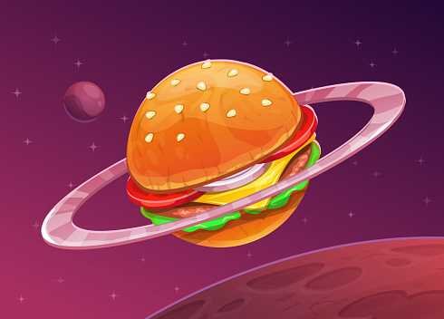
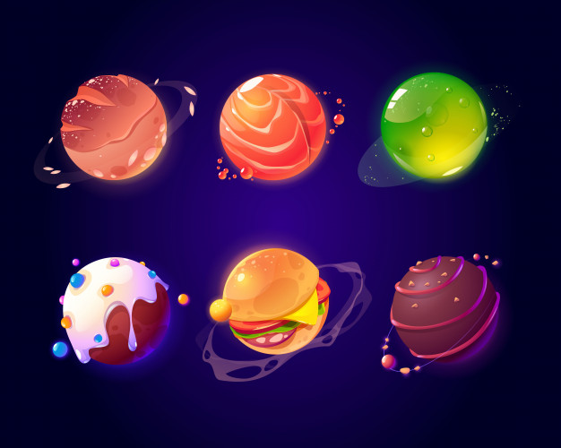

Este planeta é chamado Fominhaaauuu,
Raro de se achar no sitema Gatutinux, ele aparece a cada 300 anos, pois é quando o gato pai fica com fome.

Estes são algumas fotos registradas do sitema solar Gatutinux, podemos ver o planeta Pãomiau,Salmiau,Ervinhx,Bolinho,
Fominhaaauuu e Aranhaaaau.